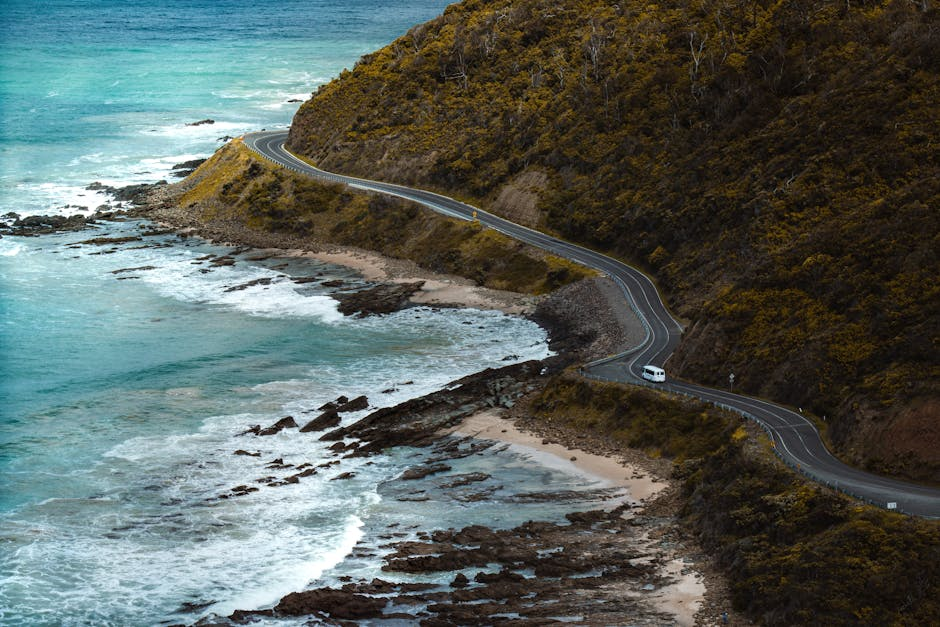
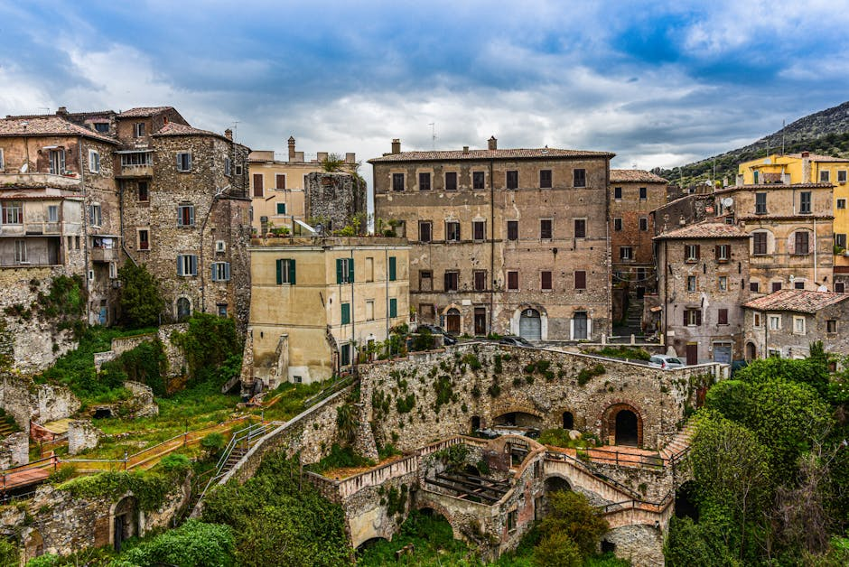
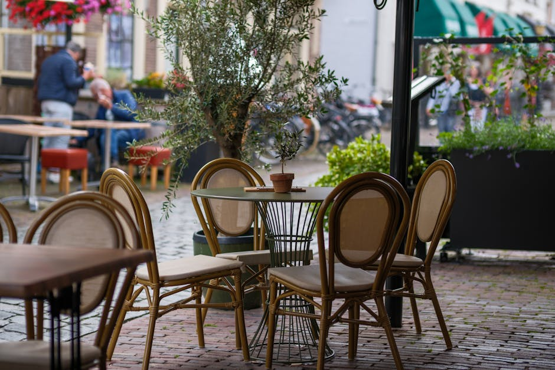

Segui il flusso dell'avventura: scopri destinazioni turistiche e borghi italiani indimenticabili.
Lasciati guidare da Coracle Flow attraverso le pagine di "Itinerari e Luoghi". La tua ispirazione quotidiana per organizzare veri itinerari viaggio e vivere le più emozionanti vacanze Italia.

La Mappa della Tua Prossima Scoperta
Esplora il nostro approccio editoriale per trasformare semplici idee in viaggi memorabili attraverso le regioni più affascinanti della penisola.

Itinerari Viaggio Esclusivi
Pianifica le tue avventure con percorsi studiati nei minimi dettagli. Dalle vette alpine alle coste bagnate dal sole, selezioniamo destinazioni turistiche capaci di sorprendere ogni tipo di esploratore, garantendo un'esperienza immersiva nella natura e nella cultura del territorio.

Il Fascino dei Borghi Italiani
Allontanati dalle rotte affollate e immergiti nella storia millenaria dei piccoli borghi italiani. Raccontiamo tradizioni, sapori autentici e atmosfere che fermano il tempo, offrendoti lo spunto perfetto per le tue prossime vacanze Italia all'insegna della lentezza e della scoperta genuina.

Arte e Cultura nelle Città d'Arte
Esplora le meraviglie architettoniche delle più celebri città d'arte. Ti guidiamo attraverso musei imperdibili, piazze storiche e passeggiate culturali che arricchiranno profondamente il tuo bagaglio di conoscenze, svelandoti i segreti custoditi dai grandi capolavori del nostro paese.
Voci di Viaggio
L'esperienza di chi ha trovato la giusta ispirazione.
"Grazie a questi spunti editoriali ho scoperto destinazioni turistiche in Umbria che non conoscevo affatto. Una bussola indispensabile per ogni mio viaggio."
— Marco T., 2026
"Gli itinerari viaggio proposti sono dettagliatissimi. Perfetti per chi ama organizzare in autonomia senza perdersi il meglio del territorio."
— Giulia S., 2026
"Gli articoli sui borghi italiani mi hanno ispirato per il mio ultimo on the road in Toscana. Contenuti narrativi di altissima qualità."
— Lorenzo P., 2026
Chi Siamo
Coracle Flow è la tua bussola digitale per esplorare le meraviglie meno conosciute del nostro paese. In stretta collaborazione promozionale con la celebre rivista Itinerari e Luoghi, celebriamo la bellezza autentica delle destinazioni turistiche lontane dal turismo di massa e l'inestimabile valore delle grandi capitali culturali.
La nostra missione è arricchire le tue vacanze Italia fornendoti racconti immersivi, consigli pratici e suggestioni visive di altissimo livello. Crediamo fermamente che ogni grande viaggio inizi sempre dalla giusta dose di ispirazione e curiosità.
Domande Frequenti
Tutto quello che devi sapere sulle nostre guide e ispirazioni.
Che tipo di destinazioni turistiche trattate nei vostri articoli?
Copriamo l'intero territorio nazionale, focalizzandoci sia sulle mete paesaggistiche più celebri che sui tesori nascosti da scoprire a passo lento, promuovendo un turismo consapevole e di qualità.
Come posso utilizzare i vostri itinerari viaggio?
I contenuti promozionali presentati sono pensati per essere letti come fonte di ispirazione o utilizzati come vere e proprie guide da seguire tappa dopo tappa durante le tue personali esplorazioni sul territorio.
Parlate esclusivamente delle grandi città d'arte?
Assolutamente no. Sebbene le città d'arte siano un orgoglio nazionale, dedichiamo ampio spazio vitale ai borghi italiani minori e ai percorsi naturalistici, per offrire una visione completa e sfaccettata del panorama turistico.
Gli itinerari proposti sono adatti per chi viaggia in famiglia?
Molti dei percorsi che suggeriamo sono perfetti per organizzare serene vacanze Italia in famiglia, includendo spesso indicazioni pratiche su difficoltà dei sentieri e accessibilità dei luoghi storici.
Dove posso acquistare o abbonarmi alla rivista cartacea completa?
Questo sito agisce come vetrina promozionale. Puoi trovare la rivista fisica nelle migliori edicole italiane o procedere all'abbonamento digitale direttamente attraverso i canali ufficiali dell'editore originario.
Inizia il Tuo Viaggio
Richiedi maggiori informazioni sulle nostre selezioni editoriali o condividi con noi la tua destinazione dei sogni.